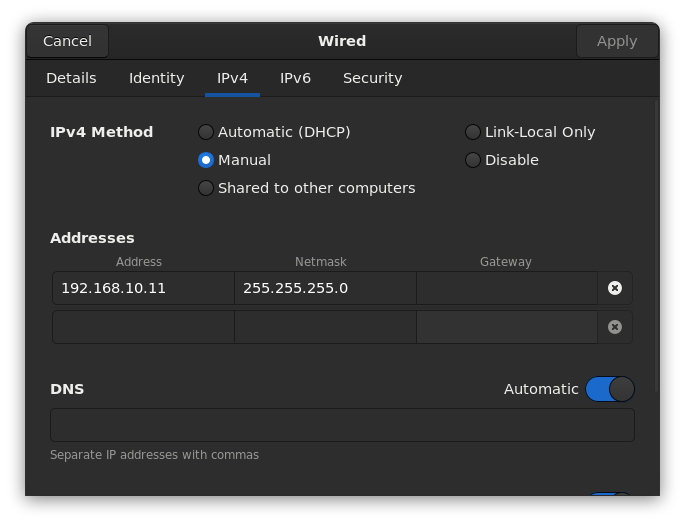

Multiplay（LAN内複数PC構成）
make dev4 コマンドを使用すると、1台のPC上でAWSIMと4つのAutowareを起動し、複数台走行を実現できます。しかし、この方法には「PCへの負荷が非常に高い」「すべての車両が同じAutowareのソースコードで動いてしまう」といった課題があります。
複数のPCを同じネットワークに接続し、各PCでAutowareを個別に実行することで、これらの課題を解決できます。これにより、異なるソースコードを用いた複数チーム間での対戦走行が可能になります。また、処理負荷を分散できるほか、Autowareのみを実行するPCではAWSIMを起動する必要がないため、比較的スペックの低いPCでも参加できるようになります。
なお、シミュレーション決勝のシステム構成は、本ページに記載されている方法を採用しています。
graph LR
HUB{{"スイッチングHub<br/>192.168.10.0/24"}}
HUB --- AWSIM["AWSIM PC<br/>192.168.10.1"]
HUB --- AW1["Autoware PC 1<br/>192.168.10.11"]
HUB --- AW2["Autoware PC 2<br/>192.168.10.12"]
HUB --- AW3["Autoware PC 3<br/>192.168.10.13"]
HUB --- AW4["Autoware PC 4<br/>192.168.10.14"]
AWSIM -.- NOTE["1台のPCにまとめることも可能"]
AW1 -.- NOTE
style NOTE fill:none,stroke:none必要なもの
- ネットワーク接続できるPC（LANケーブルまたはWi-Fi） × 1〜5台
- ルーターまたはスイッチングハブ × 1台
構成
AWSIMは専用のPCで動かすこともできますし、いずれかのAutoware用PC上で一緒に動かすこともできます。以下に2パターンの構成例を記載します。
- Autoware PCは4台分記載していますが、1台〜4台の任意の台数で動かすことができます。
- IPアドレスの設定は、スイッチングハブを使用する場合のみ必要です。ルーター（DHCP機能付き）を使用する場合は不要です。
- 記載しているIPアドレスの数値は一例です。必ずしも同じ数値を使用する必要はありません。また、他のネットワークインターフェースの設定と競合している場合は、別の設定を行ってください。
- 記載しているROS_DOMAIN_IDの数値も一例になります。1〜4で競合しない数値であれば、IPアドレスとの組み合わせに制限はありません。ただし、2台走行の場合は1〜2まで、3台走行の場合は1〜3までが使用できる数値です。
構成パターン1：AWSIMを専用PCで実行する場合の例
| PC名 | 説明 | IPアドレス例（スイッチングハブ使用時） | ROS_DOMAIN_ID |
|---|---|---|---|
| AWSIM PC | AWSIM実行用PC | 192.168.10.1 | - |
| Autoware PC 1 | Autoware実行用PC | 192.168.10.11 | 1 |
| Autoware PC 2 | Autoware実行用PC | 192.168.10.12 | 2 |
| Autoware PC 3 | Autoware実行用PC | 192.168.10.13 | 3 |
| Autoware PC 4 | Autoware実行用PC | 192.168.10.14 | 4 |
構成パターン2：AWSIMとAutowareを同じPCで実行する場合の例
| PC名 | 説明 | IPアドレス例（スイッチングハブ使用時） | ROS_DOMAIN_ID |
|---|---|---|---|
| Autoware PC 1 | Autoware + AWSIM実行用PC | 192.168.10.11 | 1 |
| Autoware PC 2 | Autoware実行用PC | 192.168.10.12 | 2 |
| Autoware PC 3 | Autoware実行用PC | 192.168.10.13 | 3 |
| Autoware PC 4 | Autoware実行用PC | 192.168.10.14 | 4 |
手順
1. ホストPCのROS 2設定を無効にする
AutowareやAWSIMを実行する際は、Dockerコンテナ内部のROS 2およびCycloneDDSを使用します。ホストPC側でROS 2やCycloneDDSの設定が有効になっていると通信が阻害される可能性があるため、無効化します。
- ホストPCの
~/.bashrcなどでROS 2関連の環境変数を設定していたり、読み込んでいる場合は無効にします（該当する行の先頭に#を付けてコメントアウトしてください）。ROS_DOMAIN_IDROS_LOCALHOST_ONLYRMW_IMPLEMENTATIONCYCLONEDDS_URI/opt/ros/humble/setup.bash
- 変更を反映させるためターミナルを再起動し、以下のコマンドを実行して何も表示されないことを確認します。
echo $ROS_DOMAIN_ID
2. 全PCを同じネットワークに接続する
ルーターに接続している場合（Ubuntuの場合）
以下の手順でDHCPを有効にします。（通常はデフォルトでDHCPに設定されているため作業不要です）
- Settings → Network を開きます。
<ルーターに接続しているネットワーク名>の歯車アイコンをクリックし、IPv4 タブを選択します。- 各項目を以下のように設定して適用します。
- IPv4 Method:
Automatic (DHCP) - DNS:
Automatic - Routes:
Automatic
スイッチングハブに接続している場合（Ubuntuの場合）
以下の手順で固定IPアドレスを設定します。
- Settings → Network を開きます。
<スイッチングハブに接続しているネットワーク名>の歯車アイコンをクリックし、IPv4 タブを選択します。- 各項目を以下のように設定して適用します（IPアドレスの末尾は「構成」の表を参考に、PCごとに重複しない値を設定してください）。
- IPv4 Method:
Manual - Address:
192.168.10.ooo - Netmask:
255.255.255.0 - Gateway: 空欄のまま

ルーターに接続している場合（Windowsの場合）
以下の手順でDHCPを有効にします。（通常はデフォルトでDHCPに設定されているため作業不要です）
- Windowsスタートボタン → 設定 → ネットワークとインターネット を開きます。
IP割当:の 編集 をクリックします。- IP 設定の編集を以下のように設定して適用します。
自動 (DHCP)
スイッチングハブに接続している場合（Windowsの場合）
以下の手順で固定IPアドレスを設定します。
- Windowsスタートボタン → 設定 → ネットワークとインターネット を開きます。
IP割当:の 編集 をクリックします。- IP 設定の編集を以下のように設定して適用します。（IPアドレスの末尾は「構成」の表を参考に、PCごとに重複しない値を設定してください）。
手動- IPv4：:
オン - IP アドレス:
192.168.10.ooo - サブネットマスク:
255.255.255.0 - ゲートウェイ: 空欄のまま
※いずれの場合でも、設定が完了したら一度LANケーブルを抜き差しして設定が即時に反映させることを推奨します。（ケーブルを抜く → 5秒待つ → ケーブルを再度刺す）
2.5. WSL２のネットワーク設定を行う（Windowsの場合のみ）
- WSL2がWindowsホストと同じLAN上のIPアドレスを共有するように、ミラーモードに設定します。
- Windows側で
.wslconfigを開き以下を追記します - その後、WSL2を再起動します （Windows PowerShell上で
wsl --shutdown） - 再起動後、WSL2上で
ip aコマンドを入力します。ネットワークに接続されているインターフェイスのIPアドレスが192.ooo.ooo.oooになっていることを確認します。172.ooo.ooo.oooだとミラーモードになっていません。設定の再確認とWSL2の再起動を試してください。
- Windows側で
[WSL2]
networkingmode=mirrored
- 次に、WSL2専用のファイアウォール機能を有効にしたうえで、外部からのアクセスをすべて許可します。
- Windows側で、管理者権限でWindows PowerShellを開き、以下のコマンドを実行します。
- Nameは変更不要です。下記の文字列のまま入力してください。
Set-NetFirewallHyperVVMSetting `
-Name '{40E0AC32-46A5-438A-A0B2-2B479E8F2E90}' `
-DefaultInboundAction Allow `
-Enabled True
# 元に戻す場合
Set-NetFirewallHyperVVMSetting `
-Name '{40E0AC32-46A5-438A-A0B2-2B479E8F2E90}' `
-DefaultInboundAction NotConfigured `
-Enabled NotConfigured
# 設定確認
Get-NetFirewallHyperVVMSetting -Name '{40E0AC32-46A5-438A-A0B2-2B479E8F2E90}'
3. IP接続の確認を行う
他のPCとのネットワーク接続が正常に行われているか確認します。
- まず、通信相手となる他のPCのIPアドレスを特定します。
- スイッチングハブ使用時: 前項で手動設定したアドレス（例:
192.168.10.1,192.168.10.11〜192.168.10.14）になります。 -
ルーター使用時: 自動で割り当てられるため、各PCのターミナルで
ip aコマンドを実行し、現在割り当てられているIPアドレスを確認してください。 -
相手のIPアドレスが確認できたら、以下のコマンドを実行して接続（疎通）確認を行います（
192.168.10.oooの部分は、確認した相手のIPアドレスに置き換えてください）。ping 192.168.10.ooo
正常に通信できていれば、応答（応答時間などの情報）が連続して表示されます（Ctrl + C で終了します）。
3.5. IP接続の確認を行う (Windowsの場合)
Windowsの場合、WSL2上のプログラムと他のPCが接続できていることを確認する必要があります。そのために、適当なhttpサーバーを立てて確認します。
- まず、WSL2上で下記コマンドでhttpサーバーを立てます
python3 -m http.server 8080 --bind 0.0.0.0
- 次に、他のPC上でブラウザを開いて
http://192.168.ooo.ooo:8080へアクセスします。IPアドレスはWSL2上で確認したものになります。ブラウザ上にファイル一覧が表示されたら成功です。
4. CycloneDDSの設定を行う
Autowareでは、通信ミドルウェアとしてCycloneDDSを使用しています。Dockerコンテナ内のCycloneDDSが、ルーター（またはスイッチングハブ）に接続されたネットワークインターフェースを正しく使用できるよう設定を行います。
- まず、
ip aコマンドを実行して、ルーター（またはスイッチングハブ）に接続されているネットワークインターフェース名を確認します。LANポートが複数ある場合は、ケーブルを抜き差しして状態がUPになるインターフェースを探すと特定しやすくなります。 - 以下の出力例では、
enx607が該当します。
1: lo: 略
略
2: docker0: 略
略
3: enx607: <BROADCAST,MULTICAST,UP,LOWER_UP> 略
略
- 次に、以下のコマンドを実行してCycloneDDSの設定を行います（
enx607の部分は、上記で確認したご自身のインターフェース名に書き換えてください）。
IF_LOCAL=enx607 # 確認したネットワークインターフェース名に変更してください
cd ~/aichallenge-racingkart/
./setup.bash network if $IF_LOCAL
5. ROS 2ドメインIDの設定を行う
以下のコマンドで設定ファイル（.env）を開き、出走位置に応じて、ROS_DOMAIN_ID を 1〜4 のいずれかに設定します。出走位置と ROS_DOMAIN_ID の対応は、上記「構成」の表を参照してください。
code ~/aichallenge-racingkart/.env
# 出走位置に応じて設定する（使用するIDのみコメントアウトを解除）
ROS_DOMAIN_ID=1
#ROS_DOMAIN_ID=2
#ROS_DOMAIN_ID=3
#ROS_DOMAIN_ID=4
6. ROS 2接続の確認を行う
各PC間でROS 2の通信が正しく行われ、かつ ROS_DOMAIN_ID ごとに通信が分離されていることを確認します。
- まず、いずれかのPC（送信側）でテスト用のトピックを送信（publish）します。ターミナルを4つ開き、それぞれのコンテナ内で
ROS_DOMAIN_IDを1〜4に指定して実行してください。
# ターミナル1（ROS_DOMAIN_ID=1 のトピックを送信）
cd ~/aichallenge-racingkart/
make autoware-bash
ROS_DOMAIN_ID=1 ros2 topic pub -r 1 /chatter1 std_msgs/msg/String "data: 'Hello World 1'"
# ターミナル2〜4でも同様に make autoware-bash を実行した上で、それぞれ以下を実行
ROS_DOMAIN_ID=2 ros2 topic pub -r 1 /chatter2 std_msgs/msg/String "data: 'Hello World 2'"
ROS_DOMAIN_ID=3 ros2 topic pub -r 1 /chatter3 std_msgs/msg/String "data: 'Hello World 3'"
ROS_DOMAIN_ID=4 ros2 topic pub -r 1 /chatter4 std_msgs/msg/String "data: 'Hello World 4'"
- 次に、接続確認を行う各PC（受信側）で、
ROS_DOMAIN_IDの設定が正しいことと、トピックが受信できることを確認します。
cd ~/aichallenge-racingkart/
make autoware-bash
echo $ROS_DOMAIN_ID
ros2 topic list
- もしもうまく行かない場合、ROS 2デーモンの再起動を試してください。特にWindowsの場合は必須かもしれません。
cd ~/aichallenge-racingkart/
make autoware-bash
ros2 daemon stop # このコマンドはエラーになるかもしれないが無視
ros2 daemon start
7. AWSIMを起動する（1台のみ）
ネットワークに接続したいずれか1台のPCでAWSIMを起動します。同時走行させる車両（Autoware PC）の台数に応じて、以下のいずれか1つのコマンドを実行してください。
cd ~/aichallenge-racingkart
# 走行させる車両の台数に合わせていずれか1つを実行
make simulator-dev # 1台の場合
make simulator-dev2 # 2台の場合
make simulator-dev3 # 3台の場合
make simulator-dev4 # 4台の場合
8. Autowareを起動する（各PC）
ネットワークに接続した各Autoware用PCで、それぞれAutowareを起動します。なお、本コマンドではAWSIMは起動しません。
cd ~/aichallenge-racingkart
make autoware-simulator